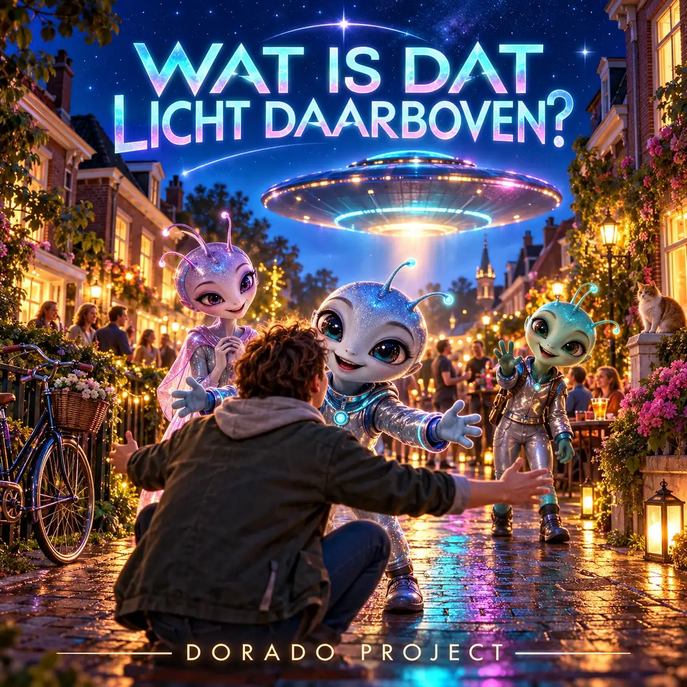

← Alle releases

SINGLE · IN PRODUCTIE
Wat Is Dat Licht Daarboven?
Electropop / Space disco
Een vrolijk Nederlandstalig ruimtelied over vriendelijke aliens die op aarde op bezoek komen. Met langgerekte klinkers, warme vriendschap en een aanstekelijk biep biep biep.
De Spotify-link volgt zodra het nummer daar beschikbaar is.
Vrienden van ver
Een licht boven een Nederlandse straat blijkt een bezoek van vriendelijke buitenaardse wezentjes. Ze komen van ver, spreken hun klinkers heerlijk lang en vreemd uit en vinden hier nieuwe vrienden. Dit nieuwe lied sluit aan bij de warme, futuristische wereld van Parkeer Je Schotel. De muzikale richting is dansbare electropop en space disco, met menselijke zang, speelse alienstemmen en het terugkerende biep biep biep. Het nummer is in productie; een luisterlink volgt zodra de definitieve release beschikbaar is.
Meer van Dorado Project
Van synthpop tot rock: ontdek de andere nummers en het verhaal achter Dorado Project.
Bekijk alle nummers →